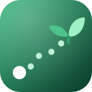

Plastic Path
Открываю…
Нажмите «Поделиться» внизу Safari.
Выберите «На экран „Домой“» → «Добавить».
Нажмите кнопку ниже — дальше иконка будет сразу открывать приложение.
Готово, я добавил
Открыть Plastic Path